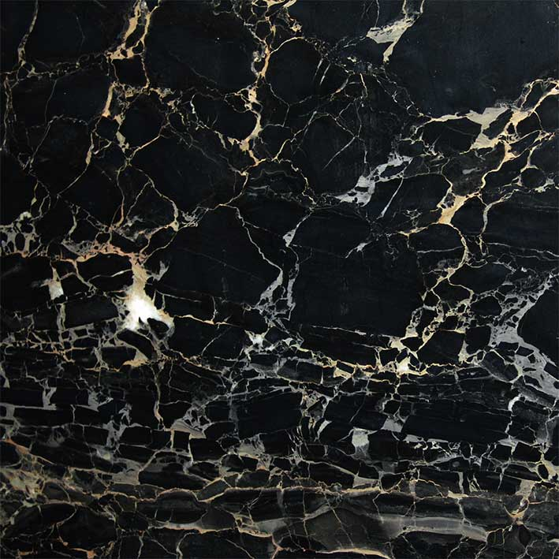
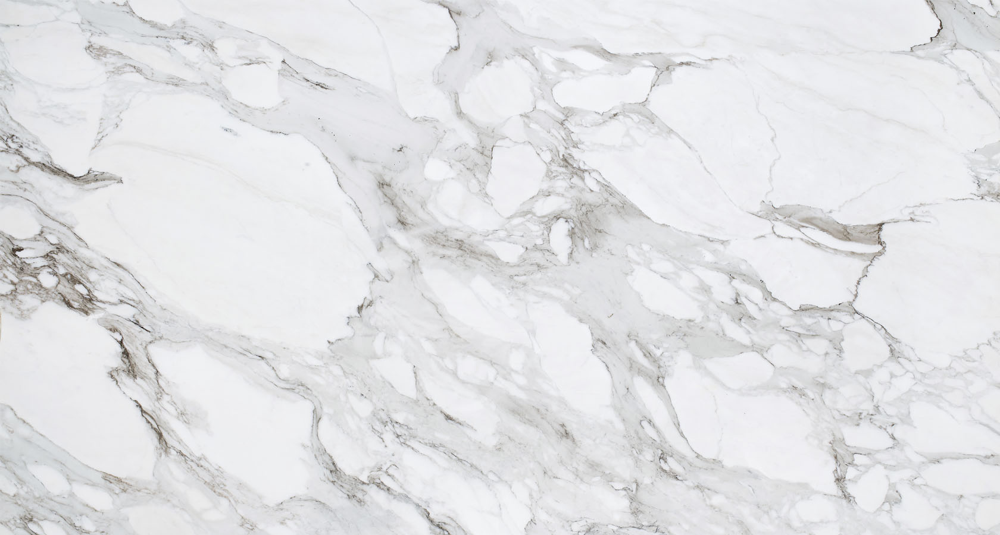

Мрамор:

Образование мрамора — результат так называемого процесса метаморфизма, когда, под воздействием определённых физико-химических условий, структура известняка существенно изменяется.

В строительной практике «мрамором» называют метаморфические породы средней твёрдости, принимающие полировку.
Мрамор используется как камень для памятников , как штучный строительный камень для наружной облицовки и внутренней отделки зданий в виде дроблёного и молотого камня, а также штучного камня. Мраморные доски из чистого кальцитового мрамора применяют в электротехнике . Мраморная крошка и дроблёный песок используются при изготовлении каменной мозаики и штукатурки, в качестве заполнителей бетона. Мраморная мука находит применение в сельском хозяйстве.
More Info